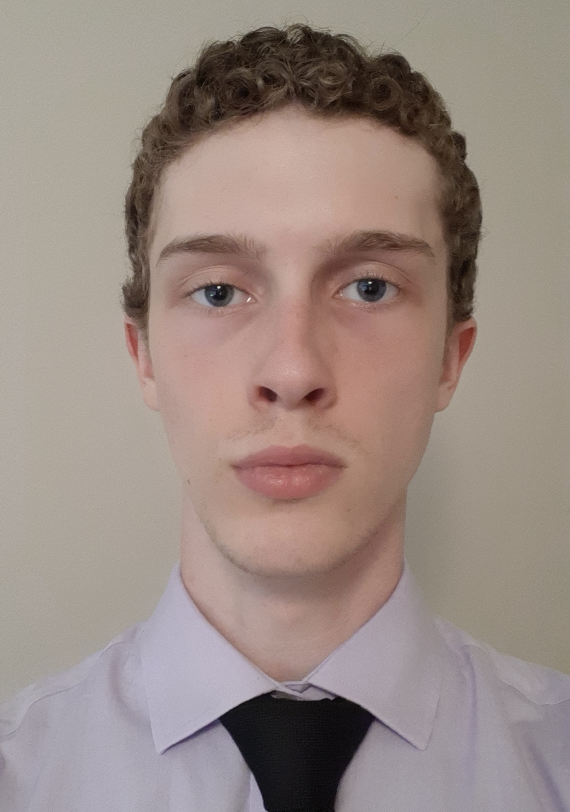
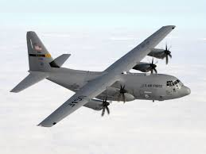
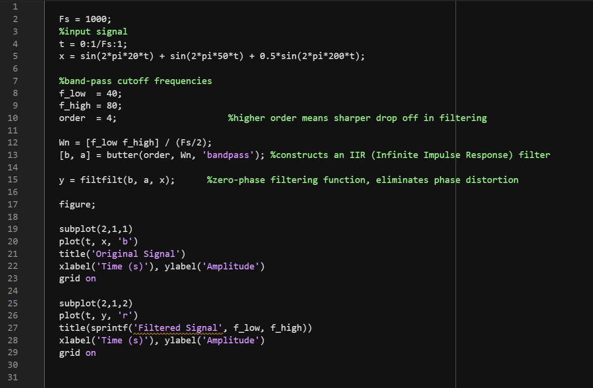
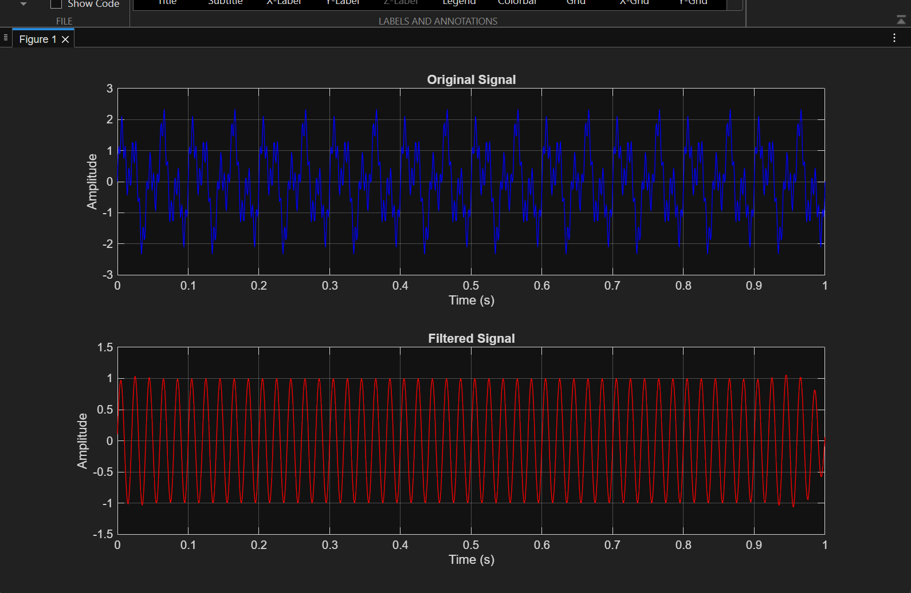

Resume

Hello, my name is Carter Atkinson. I am currently a second-year Electrical Engineering major at the Georgia Institute of Technology. This is my virtual ePortfolio, which features my resume and some projects I have completed in my time at GT.
I am originally from Macon, GA, where I went to high school and got heavily involved in extracurriculars and volunteering. I did a lot of public speaking through the Mock Trial and Model UN clubs and volunteered primarily through the Rho Kappa and Student Council clubs. I did not get any STEM experience at all until I got to GT, where some of my classwork introduced me to my major. The two most informative classes I have taken so far have been ECE 2020 and ECE 2026, which are Intro to Digital System Design and Intro to Signal Processing, respectively. They have taught me the foundation of many topics I will be exploring more in some of my later classes.

My current career goals are to find a summer internship, likely at a company that works with aircraft, defense contracting, or RF, as these are the general areas I have some work experience with. I want to become a full-time engineer after obtaining my 4-year degree.
I have previously interned with Mercer Engineering Research Center (MERC), where I worked on multiple projects centered around the C-130 plane. Most of my tasking involved either modelling in SolidWorks, working with physical components, or sourcing parts/doing research online. I got to work closely with engineers and other interns to solve a variety of different problems over the course of my internship. Currently, I am doing undergraduate research as a part of the ECE exclusive Opportunity Research Scholars program (ORS) alongside a PHD student, a master’s student, and two other second-year undergraduate students. Our project is titled Pilot Beam Array for Space Solar Power, and our goal is to design a prototype full-duplex pilot beam array for wireless power transfer that maximizes gain on the receiver side and minimizes power loss. In high school, I volunteered in a variety of different ways, including blood drives for the Red Cross, wrapping holiday gifts for teachers, reading at elementary schools, and organizing food distribution at football games. At GT, I volunteered for the high school Science Olympiad being hosted by helping to facilitate the “Potions and Poisons” event and the awards ceremony. This involved grading papers, moving materials around campus, and guiding students to their designated locations.

Prior to coming to GT, I was awarded several local scholarships, namely the Dr. Curtis Jones Leadership Award, the Golden Eagle Award (Runner-Up, Social Sciences), and the Peyton Anderson Scholars program. I was also awarded the Youth Community Leadership Award by Keep Macon-Bibb Beautiful because my school received a grant due to an idea I had to get people together to clean up the streets of my community. My involvement in the Georgia Civic Awareness Program for two years got me the Bert Bivins III Leadership Award.
My discovery project idea was to develop an FIR (finite impulse response) band pass filter in MATLAB that could take in a signal and display the filtered version of the signal in a plot. I got this idea through a combination of two experiences: my labs in ECE 2026 (which are purely MATLAB), and my internship last summer (where I initially learned what a band pass filter is). The first step in my process was researching online for the inevitably existing iterations of this idea by other people to see what the general process of development is. I eventually settled on the tutorial MATLAB provides on their website, which gives some different examples of ways to design the filter and explains each aspect. Using this as a reference, I was able to code my own filter. I also had to use knowledge that I learned from taking ECE 2026 this semester, specifically information about sampling signals. Filtering a signal involves sampling it, and to avoid aliasing I had to pick a sampling rate that would be more than twice the highest frequency contained in the example signal. Also, a band pass filter is a combination of a low pass filter and a high pass filter, so I had to pick an upper and lower bound for the frequency I wanted to let through the filter. I had an initial design for the code that did not work correctly. In particular, the signal was not properly filtered and was phase shifted. This was a common issue that I was able to solve relatively easily by looking online for solutions. I settled on the MATLAB function “filtfilt”, which prevented phase distortion in the filtered signal. The main drawback of my filter design is that the code would need to be altered in a few places depending on what the input signal is and what frequencies you want to filter out. I could have potentially made the code more generalized so that it would work given any signal. For example, the sampling rate needs to be more than twice the highest frequency in the signal. Right now, I have the sampling rate set to a certain value, but this could be changed to be more generalized if I was more skilled with coding in MATLAB. Doing this project greatly improved my understanding of the design of band pass filters, as well as my proficiency in MATLAB. I learned two new functions in MATLAB, namely “filtfilt” and “butter”, which are both used to construct filters. Filtfilt prevents phase distortion when filtering, and butter actually constructs the IIR filter. My overall experience with this project was very positive, as I encountered few drawbacks in the design process. This project would be most related to the signal information processing thread, which I was not planning on picking as one of my threads. Doing this project had not changed my interests, so I will likely still not choose this as one of my threads. Since the project completes its intended function well, I would not intend to continue it in the future.
 